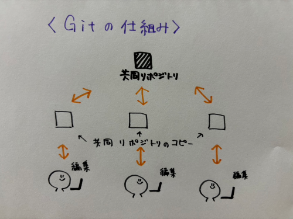
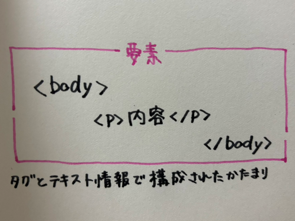

デザイン演習 第1回
Gitとは
Gitとは、分散型バージョン管理システムのこと。分散型バージョン管理システムとは、複数のリポジトリでファイルのバージョンを管理する仕組み。
主にプログラムのファイルを管理するために使われている。
(リポジトリとは、ファイルやファイルの変更履歴を保管している場所)
＜メリット＞
- プログラムのバージョン管理や共有がスムーズになる
- 複数人で同じファイルを編集しても上書きされない
- 古いバージョンに簡単に戻すことができる
- オフラインでも変更を管理できる
＜デメリット＞
- 仕組みがやや複雑
- 仕組みの理解や操作頬法など覚えることが多い

★GitHub・GitLabとは？★
Gitを活用したWebサービスのこと。Gitとは別物で、ファイルやファイルの変更履歴等をオンラインで保管してくれる。
GitHubやGitLabを利用することで、リアルタイムでファイルやファイルの変更履歴等を見ることができるため、チーム作業をスムーズに進めることができる。
【参考サイト】
ドキドキしないためのGit解説～概念編～
【入門】Gitとは？できることや使い方、GitHubとの違いを分かりやすく解説
Htmlとは
Htmlとは、Webページを作成するために作られた言語のこと。Webページ内の大元の構造た基本的な情報を構成する役割を担っている。
Htmlによって作成されたWebページは、いつどこからアクセスしても毎回同じページが表示される。→静的サイト
■静的サイト■
メリット…表示スピードが速い
デメリット…ページの更新に手間と時間がかかる
★Htmlの基本用語★
①タグ
Htmlの記述に意味を与える印

＜代表的なタグ＞
- ＜h1＞＜h2＞＜h3＞… 見出し（数字が大きくなるほど字の大きさは小さくなる）
- ＜br＞… 改行
- ＜img＞… 画像
- ＜a＞… リンク
②要素
Webを構成するテキスト情報のかたまりを指す用語

③属性
個々のタグに特定の性質や動作を与える記述

☆Htmlの実践☆
1.見出しみなとみらい
これを表示するには、＜h1＞デザイン演習 第1回＜h1＞と入力する。
2.画像

これを表示するには、＜img src="./①/e.png"width=25%＞と入力する。
①は写真が入ってるファイル名、e.pngは画像名、widthは画像の幅調整
3.リンク
神奈川大学HP
これを表示するには、＜a href="https://www.kanagawa-u.ac.jp/"target="_blank">神奈川大学HP＜/a＞と入力する。
リンクを張り付けた後ろにtarget=_blankを入れると別のタブで開くことができる。
【参考サイト】
【初心者向け】よく使うHTMLタグ一覧!
HTMLとは？初心者向けに基礎知識を分かりやすく解説
HTMLとは？基本や簡単なHTMLタグをわかりやすく解説